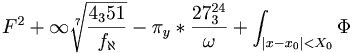

De: La Frikipedia, la enciclopedia extremadamente seria.
De: La Frikipedia, la enciclopedia extremadamente seria. De: La Frikipedia, la enciclopedia extremadamente seria.
Las ciencias de la naturaleza son según la Kiwipedia son "aquellas ciencias que tienen por objeto el estudio de la naturaleza.". Pero esta claro que no es así. De las ciencias podemos decir, que es el estudio de porque el sol gira alrededor de la tierra o porque los n00bs tienen esa puta obsesión con El Innombrable. Es decir, las ciencias que estudian todo eso que nos da igual pero ellas están ahí. Se pueden decir que hay dos versiones respecto a estas ciencias. Una de ellas es la de la Iglesia Católica Apóstolica y Rumana, dirigida por el respetado Señor Rocky Varela y otra la de la Comunidad Ciéntifica, dirigida por el también respetado El Primo de Rajoy. A partir de esto podemos sacar 2 versiones:
Propugna que todo ha salido de un señor con barba y sandalias japos. Una de sus irrefutables teorías es que el génesis viene de dos muñecos de barro que comenzaron a procrear y se comieron un Calimotxo prohibida (versión recientemente modernizada para atraer a los jóvenes.
También dice que Dios metió al microondas tres muñecos de barro. Uno salió crudo y fué el hombre blanco, otro se le quemó (y le añadió una especial cantidad de barro en la entrepierna) y fué el hombre negro. Y otro salió perfecto y fueron los chinos y los japoneses. Respecto a la astronomía ellos sostienen nuestra actual versión, es decir que el Sol gira alrededor de la tierra y todo el que diga lo contrario, será a debate.
Y respecto a las demás ciencias opinan tres normas:
Esta teoría es seguida por un 80% de la población.
Absurda e irreal teoría que proponen los de la comunidad. Dice que todo se creó en el Badabín Badabán y que Dios no existe. Todos sabemos que eso es mentira. Una de sus teorías propuesta por Thomas Edison dice que venimos del mono y que hemos ido perdiendo pelo y cerebro progresivamente. Otra de sus teorías esque la sangre se mueve por todo el cuerpo. Estas teorías inverosímiles han sido rechazadas a lo largo de la historia por el pueblo y por los actuales gobiernos. Las 3 leyes fundamentales de esta teoría son:
Ningún estado a reconocido esta teoría y la sigue un 10% de la población. Pero en La Frikipedia somos diferentes y seguiremos esta teoría.
Para la correcta clasificación de las ciencias la hemos dividido en 8 bloques temáticos:
Artículo principal: Biología
Es la ciencia que estudia las cosas verdes que se mueven. El famoso biólogo Stephen Hawkins afirma que "La Biología, aparte de ser el Opio del pueblo, es una ciencia realmente asquerosa".
La biología es realmente una afición realmente asquerosa que huele mal. La Biología se divide en dos grandes grupos:
Artículo principal: Química
Es la ciencia que estudia esos líquido de colores llamativos burbujeantes y que suelen explotar sin razón aparente. El clásico tópico inducido por la tele es que todo lo relacionado con la química o explota, o arde o vaporiza la ropa (Tópico version porno). Con la química podemos hacer montones de cosas como...como...eso...seguro que hay algo... ¡vaporizar ropa!. Los químicos son normalmente viejos con gafas y sin vida social como el Dr. Frink. El mayor avance en química fue cuando se descubrió que el aceite flota en el agua. Esta se divide en:
Artículo principal: Física
La física es la ciencia que estudia el porque de las cosas. Esta ciencia estudia por ejemplo porque las pompas de jabón son inmunes a la gravedad y porque un frisbi que se tira en línea curva va recto (todo el mundo sabe que es porque el planeta no va hacía delante, sino hacía arriba y sin parar de girar). Esta ciencia es realmente inconclusa, pues es díficil saber porque un cuerpo proyectado a 120km/h es fuertemente proporcional a la inversión de cuerpos obcenos. Para comprender mejor la Física les proponemos la siguiente fórmula:

Siendo F física y π tu capacidad mental, podemos deducir que nunca vas a comprender lo que pone ahí. El mayor descubrimiento en cuanto a física se refiere es que una bola que choca con un monton de bolas atadas a un palo por cuerdecitas no hace que se mueva la primera bola, si no la última, porque las bolas se quedan quietas y la última se mueve por la fuerza de fricción.
Artículo principal: Matemáticas
Las matemáticas son una ciencia incomprensible y sin sentido que estudia las cosas teóricamente. Esto quiere decir que estudia cosas que no pasan en la realidad, cosas figuradas, y cosas que no se pueden aplicar a la realidad, como las ecuaciones. Las matemáticas no tienen uso alguno salvo estudiar los números. Pero aquí entraría la pregunta principal, ¿Qué son los números?
Pues es bien fácil. Los números son lo que nos representa en un sentido figurado. Es decir, cada persona tiene un número y es representada con el en un universo figurado y paralelo. El estudio de los números es aburrido y tedioso. El tópico común de las matemáticas es una pizarra llena de números, letras, fracciones e iguales. ¿Qué que son todas estas Paranoyas? pues leeros la TeX. Pero existe un problema. Las matemáticas son una asignatura, y no es factible el uso de chuletas porque las matemáticas no se estudian, se hace como si se comprenden. Aún así existen modos para eludir el suspenso, y existen dos formas:
Este es el método usado por el sujeto B en el método fácil, rápido y para toda la familia, recordamos que usarlo es una perdida de tiempo:
Siguiendo este método es probable que apruebesCita Requerida. Pero ahora viene el método fácil y rápido que vas a seguir para estudiarte el puñetero exámen.
Este método funciona siempre siempre, y es el más aconsejable de seguir.
Artículo principal: Medicina
La medicina es la ciencia que estudia un metodo para ponernos enfermos pero que creamos que lo han hecho bien y volvamos a su consulta. Es la parte de las ciencias que da dólare. Esta forma moderna de tortura es impartida por médicos en el hospital. Existen varios tipos de médicos:
Artículo principal: Fenómenos paratontolavas
Estas ciencias son una verdadera gilipollez. Es la que estudia cosas que no se saben si estan, o si no están. Por ejemplo los fantasmas. ¿Quién coño se cree eso? Que ya tenemos una edad joder. Estas ciencias estudian por ejemplo una supuesta audición en la que se olle "mbrshfdm" y ellos escuchan y te proponen que suene "Hola soy Samantha. Morí hace diez años por que no pasé este mensaje. Pásalo o te sacaré los ojos. Solo copia y pega...". El caso esque hay gente que pasa el maldito mensaje ¿Porque he cambiado de los sonidos paranormales a los hoaxes?. Volviendo a los sonidos paranormales, vamos a hacer una lista de fenómenos paranormales:
Suceden mientras estas viendo la tele y de repente aperece una mancha extraña que no sabes lo que es y piensas Un fallillo en la retransmisión. ¡Pero a las dos semanas sale en la tele Iker Jiménez diciendo que es un fantasma de una niña que murió acuchillada! En ese momento tienes dos posibilidades
A partir de ahi la gente se divide en dos grupos.
Son sonidos raros que suenan por tu casa, o en un CD, o un mensaje satánico al pasar un vinilo pa trás. normalmente suenan cosas como "uauuauhns" o "mbfsfhsj" pero gracias al loquendo podemos escuchar en Pato milenio "Fuera, salid, los muertos os expulsan". Las sicofonías son de dos tipos: De muertos o satánicas. Las de muertos suelen sonar en casas fantasmas pidiendo que salgas de allí. Las satánicas suelen decir cosas de sexo bizarro, de viva satán y de orgías bisexuales. Las satánicas se encuentran pasando vinilos al revés, pero cuando tu lo pasas no suena nada, solo cuando lo pones en youtube. Excepcionalmente también existen sicofonías de ultraderecha, como en el famoso vídeo de Oliver y Benji.
Son figuras raras que ves al fondo del pasillo, figuras blancas y transparentes a lo que uno si se puede acojonar tranquilamente. normalmente la miras, parpadeas y ya no esta, no te ha dicho nada, a lo mejor ha sido solo fructo de tu imaginación, pero ahí estás tú, cagado toda la noche. Pato milenio de nuevo gracias al windows video maker consigue que la figura te señale y diga Ahí morí yo. Otro ejemplo son las fotos en las que sale una mancha. ¿Que ves? Nada. ¿Qué te hacen ver? un muerto con un rosario diciendo ¡¡¡FUERA!!!
Vas por el parque y un columpio se mueve hacia alante y hacia atrás solo sonando niu, niu. Tú piensas: Bah, será el viento, no voy a preocuparme por un puto columpio ahora que por fin tengo una cita. ¡Pero pobre insensato de tí! A las dos semanas aparece en Pato milenio Iker Jiménez diciendo que el columpio, (en el que sales tu detrás esperando a esa chica que nunca llegó) hay un ente fantasmal que mueve el columpio porque se aburre y blah blah, blah...
El conocido por todos Naranjito fue en su momento un monstruo de la genética. La verdadera historia se remonta en el 81 a Emolandia. Por esa época los niños que nacían se dejaron de cortar las venas. Entonces el gobierno de Emolandia decidió fusionar una naranja con un niño para que el niño en lugar de sangre tuviera zumo y que los niños creyeran que al cortarse la sangre era buena y no morías. Pero la fusión salió mal y fue desterrado y exiliado. Naranjito fue recorriendo todos los países de Europa y trás huir de 33 asesinatos llegó a España donde se iba a celebrar el mundial, y la mascota, El Fary, se puso en huelga, cogieron a Naranjito y vivieron felices para siempre. Esta es la historia que acaba bien.
Porta, el dios de pijos, ese toyaco, fue (y es) un monstruo de la Ciencia. Porta nació con un ligero retraso mental, trás lo que la madre, rica, le llevo a una clínica a ver si podía volverle normal. Pero resultó que salió mal y alcanzo su actual nivel de subnormalidad. Pero resulta que durante la operación el médico estaba escuchando Junior, Santaflow, o algún otro toyaco. Por eso Porta comenzó a escribir algo parecido a la música que hay en su cabeza. Pero resulta que Junior estaba cantando una en contra de las mujeres y Santaflow una de un historia de amor. Así que por eso ahora Porta sufre de dispariedad de criterios. Esta es la historia que acaba mal (y tán mal...).
 Ciencias Ciencias
| ||
|---|---|---|
Ciencias Sociales
Ciencias Exactas
Ciencias Ocultas
|
Autor(es):